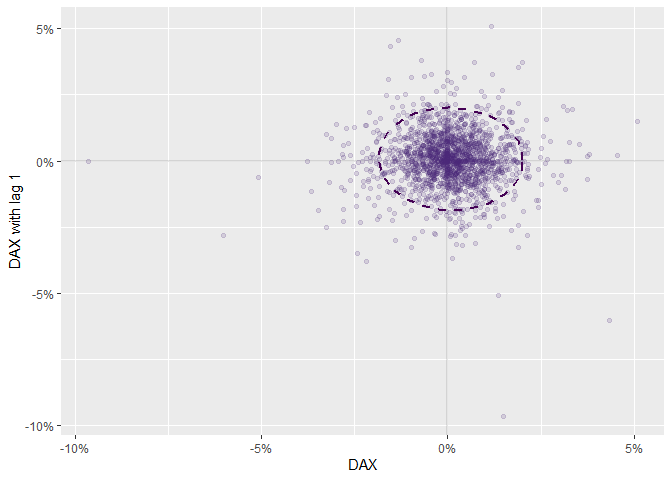
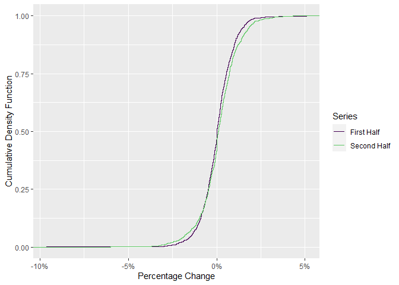

The goal of invariance is to help users to perform the first step in Meucci’s Checklist: The Quest for Invariance.
Installation
You can install the development version of invariance from Github with devtools:
# install.packages("devtools")
devtools::install_github("Reckziegel/invariance")Example
library(invariance)
library(tibble)
# Log-returns as candidates for invariance
x <- as_tibble(diff(log(EuStockMarkets)))
x
#> # A tibble: 1,859 x 4
#> DAX SMI CAC FTSE
#> <dbl> <dbl> <dbl> <dbl>
#> 1 -0.00933 0.00618 -0.0127 0.00677
#> 2 -0.00442 -0.00588 -0.0187 -0.00489
#> 3 0.00900 0.00327 -0.00578 0.00903
#> 4 -0.00178 0.00148 0.00874 0.00577
#> 5 -0.00468 -0.00893 -0.00512 -0.00723
#> 6 0.0124 0.00674 0.0117 0.00852
#> 7 0.00576 0.0122 0.0131 0.00821
#> 8 -0.00287 -0.00359 -0.00194 0.000837
#> 9 0.00635 0.0110 0.000171 -0.00523
#> 10 0.00118 0.00436 0.00313 0.0140
#> # ... with 1,849 more rowsThe main statistics of a time-series can be summarized with series_describe:
series_describe(x)
#> # A tibble: 4 x 13
#> asset observations na minimum quartile_1 median mean quartile_3 maximum
#> <chr> <dbl> <dbl> <dbl> <dbl> <dbl> <dbl> <dbl> <dbl>
#> 1 DAX 1859 0 -0.0963 -0.00469 4.73e-4 6.52e-4 0.00636 0.0508
#> 2 SMI 1859 0 -0.0838 -0.00380 8.86e-4 8.18e-4 0.00607 0.0497
#> 3 CAC 1859 0 -0.0758 -0.00606 0 4.37e-4 0.00710 0.0610
#> 4 FTSE 1859 0 -0.0414 -0.00432 8.02e-5 4.32e-4 0.00525 0.0544
#> # ... with 4 more variables: variance <dbl>, std <dbl>, skewness <dbl>,
#> # kurtosis <dbl>To check if a series is stationary - “invariant” - use invariance_test:
# must be univariate
invariance_test(x["CAC"])
For “invariant” time-series the shape of the ellipsoid should be circular and the histograms should look the same.
To test if a distribution shows any evidence of changing behavior due to structural breaks, regime shifts, etc. use ks_test:
ks_test(x[ , 1])
#>
#> Two-sample Kolmogorov-Smirnov test
#>
#> data: x and y
#> D = 0.067441, p-value = 0.02917
#> alternative hypothesis: two-sided
If the two pieces of the distribution are statistically different a Bayesian estimation technique may be recommended in the next step of the Checklist: Estimation.
Reference
- Meucci, Attilio, ‘The Prayer’ Ten-Step Checklist for Advanced Risk and Portfolio Management (February 2, 2011). Available at SSRN: https://ssrn.com/abstract=1753788 or http://dx.doi.org/10.2139/ssrn.1753788